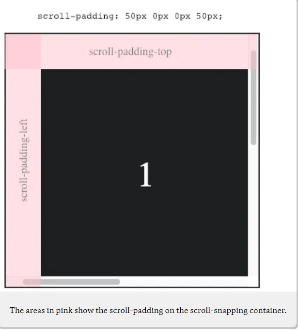

$$ -- scroll-padding is used to adjust the snapping container’s optimal viewing region. This is useful if the container has elements such as a fixed header that would obscure elements inside or if the scrollable container needs some space to give the interior elements room to breathe once they’ve been “snapped” into position.
scroll-padding is an optional property for any scroll-snapping container
A simple example would be using scroll-padding to create some fixed spacing of 50px at the top and left of the container:
.element {
scroll-padding: 50px 0 0 50px;
}

/* Shorthand */
scroll-padding: length-percentage | auto;
/* Longhands */
scroll-padding-top: length-percentage | auto;
scroll-padding-right: length-percentage | auto;
scroll-padding-bottom: length-percentage | auto;
scroll-padding-left: length-percentage | auto;
/* inline-specific and block-specific properties as well */
scroll-padding-block : length-percentage | auto ;
scroll-padding-inline: length-percentage | auto ;
Heads up: It doesn't look like your browser supports scroll snapping! Check Can I use for current browser support. Maybe try opening this CodePen in a different browser, like Chrome?
On all examples, scroll slowly to "feel" the snap points.
scroll-padding: 0px 0px 0px
0px;
scroll-padding: 50px 0px 0px
50px;
scroll-padding: 100px 0px 0px
100px;